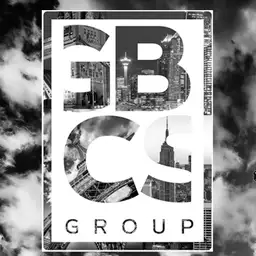

Experience
Software Engineer, Lexomics Research Group
- Contributed to a decade‐old text‐analysis codebase by isolating the backend and building a public API.
- Implemented and documented new endpoints for processing digitized text corpora.
- Enhanced software modularity and automated testing in Python.
- Gained proficiency with large‐scale GitHub workflows and API design.

Data Analyst, GBCS Group
- Performed business and data analysis to frame prospect emails and research target companies.
- Analyzed emissions‐related datasets to support sustainability research.
- Contributed to developing greenhouse‐gas calculations and sustainability metrics.
- Collaborated on implementing carbon‐reduction strategies.
Machine Learning Fellow, NeoViews
- Predicted off‐camera player positions using regression and multivariate distribution techniques.
- Built and fine-tuned LSTM models for time‐series location forecasting.
- Preprocessed and cleaned tracking data pipelines in Python and Excel.
Teaching Assistant, AI for Good
- Delivered lectures and led hands-on workshops on sentiment analysis and ML basics.
- Guided students through data cleaning and big-data exploration using Python & Excel.
- Mentored beginners to implement simple predictive models in Jupyter notebooks.
Research Assistant, USDA Grant
- Cleaned and organized large agricultural datasets in Excel.
- Analyzed pre- and post-COVID-19 farmers market trends.
- Built pivot dashboards and summary reports for stakeholder review.
- Project currently paused pending new grant cycles.
Peer Chemistry Tutor
- Provided one-on-one tutoring in organic, inorganic, and physical chemistry.
- Hosted study groups for midterm and final exam preparation.
- Created custom problem sets to address common student challenges.